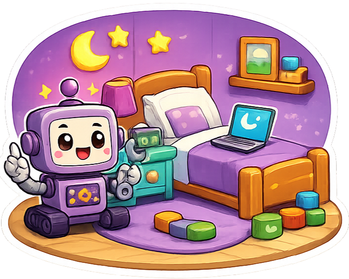
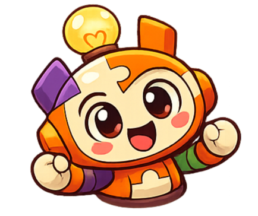

Mapa

Quarto
— Depuração
Mini-jogo 2
0 pts
?

Carregando...
Monte a rotina para
IR À ESCOLA
Monte a ordem correta aqui embaixo.
Verificar sequência
Limpar
Como jogar
Depuração completa!
Voltar ao mapa